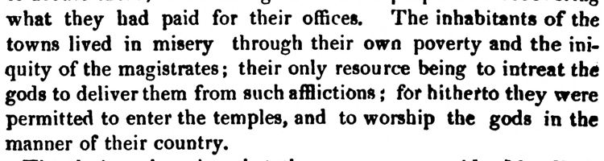

Gratian refuses the robe of Pontifex Maximus (pp. 115–116)
English: London 1814, Book IV, pp. 115–116, scan n114–n115. Highlighted: what Lecky’s note 16 reports.
![Printed text: “Upon the elevation of any one to the imperial dignity, the pontifices brought him the priestly habit, and he was immediately styled, Pontifex Maximus … But when the Pontifices, in the accustomed manner, brought the sacred robe to Gratian, he, considering it a garment unlawful for a Christian to use, rejected their offer. When the robe was restored to the priests who brought it, their chief is said to have made this observation, If the emperor refuses to become Pontifex, we shall soon make one.”](../assets/img/ref/zosimus-1814-pp115-116.jpg)
… Upon the elevation of any one to the imperial dignity, the pontifices brought him the priestly habit, and he was immediately styled, Pontifex Maximus, or chief priest. All former emperors, indeed, appeared gratified with the distinction, and willingly adopted the title. Even Constantine himself, when he was emperor, accepted it, although he was seduced from the path of rectitude in regard to sacred affairs, and had embraced the Christian faith. In like manner did all who succeeded him to Valentinian and Valens. But when the Pontifices, in the accustomed manner, brought the sacred robe to Gratian, he, considering it a garment unlawful for a Christian to use, rejected their offer. When the robe was restored to the [p. 116] priests who brought it, their chief is said to have made this observation, If the emperor refuses to become Pontifex, we shall soon make one.
Lecky (vol. II, ch. IV, text at note 16): Constantine “still retained the old imperial title of Pontifex Maximus”; note 16: “The first emperor who refused it was Gratian (Zosimus, book iv.).”
The temples still open under Theodosius (p. 110)
English: London 1814, Book IV, p. 110, scan n109. Highlighted: what Lecky’s note 22 reports.

… The inhabitants of the towns lived in misery through their own poverty and the iniquity of the magistrates; their only resource being to intreat the gods to deliver them from such afflictions; for hitherto they were permitted to enter the temples, and to worship the gods in the manner of their country.
Lecky (vol. II, ch. IV, note 22): “the pagan Zosimus tells us expressly that in the beginning of the reign of Theodosius his coreligionists were still at liberty to worship in the temples.”
Further down the rabbit hole
Sources that Lecky cites in the notes next to the ones that cite this page.
- Milman, The History of ChristianityDid Constantine ban the pagan sacrifices? A dean weighs Eusebius against Constantine
- Eusebius, Life of ConstantineThe emperor’s biographer on the ban on sacrifice: with a translator’s footnote that limits it
- Codex Theodosianus XVI.8.1 and XVI.10.3Constantine on Jews and converts, and the temples spared for the sake of the games
- Beugnot, Histoire de la destruction du paganisme en OccidentConstantius and the ‘enemies of the human race’
- Codex Theodosianus, IX.16Lecky’s Latin matches the 1738 text word for word
- Gibbon, Decline and Fall of the Roman EmpireAn Augustine quotation and a stronger claim about Aliturus


Backlinks
Every place in Rationalism in Europe that links to this page (generated automatically when the site is built).